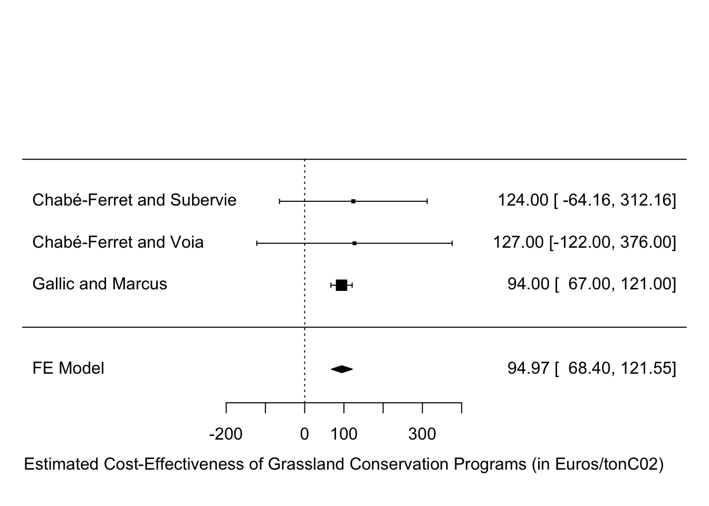
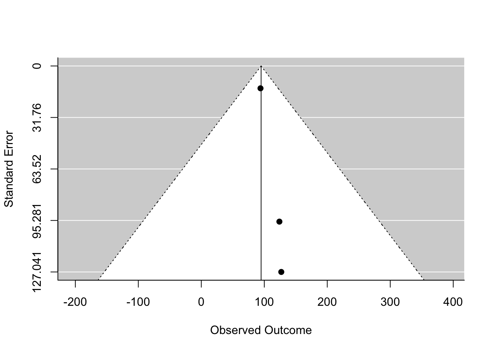

Under certain conditions, grassland can avoid the emission of GHGs. A case in point is when grassland is extensively managed and replaces cropland. In that case, it has been computed that 10.55tC02 are stored per hectare of extensively managed grassland saved from conversion to cropland. As a result, Grassland Conservation Programs, that pay farmers for maintaining grassland cover, might be an effective way to combat climate change, if they succeed in triggering an increase in grassland cover for a reasonable amount of money.
In this section we report on the results of several studies that have estimated the cost-effectiveness of the French implementation of the EU Grassland Conservation Program, one of the largest Grassland Conservation Programs in the world. Below is the estimated cost-effectiveness of this program:
Cost-Effectiveness of the French Grassland Conservation Program (in Euros/tonC02)
The overall estimate is of 95 \(\pm\) 27 Euros per ton of C02. This is still much higher than the social cost of C02 of 24 Euros per ton of C02 as estimated by the US EPA. It is close to the most recent estimates of the social cost of carbon stemming from the Quinet report.
The results presented above suffer from several limitations that might warrant further investigations and that might change the overall assessment of the cost-effectiveness of the program.
How fast the additional grassland area triggered by the program would return to another use after the payments stop is key to the estimation of cost-effectiveness. The more permanent the changes, the more cost-effective the program.
The estimates presented on this page assume that the effects of the program are permanent: the additional carbon stored in the ground thanks to the program is assumed to stay there forever, while the program only pays subsidies for five years. As a consequence, the cost-effectiveness estimates presented on this page are a lower bound on the cost-effectiveness of the program. An upper bound could be obtained by assuming that all the additional carbon stored in the ground returns to the atmosphere once the payments stop.
In order to estimate the durability of the effects of the program, one needs to observe what happens once farmers stop receiving the subisidies. The study by Gallic and Marcus seems to be able to answer this question since it considers farmers that lose the benefit of the subsidy. An estimate of permanence could be produced from their study. It is still to be done.
Whether the additional grassland area triggered by the program replaces forest or crops, and which type of crop, is critical for the estimation of cost-effectiveness. If most of the grassland area replaces forest, or slowing growing bushes, the program likely increases GHG emissions. If most of the grassland area replaces crops, especially crops that use a lot of nitrogen fertilizer, the program decreases GHG emissions.
The estimates presented on this page follow Baudrier, Bellassen and Foucherot in assuming that the additional grassland triggered by the program replaces corn silage. Corn silage uses slightly more nitrogen, triggers a release of carbon stored in the grassland and is assumed to trigger the adoption of 1.9 more cows. The last two changes are responsible for most of averted GHG emissions dues to the program.
What evidence do we have that these assumptions are correct? Chabé-Ferret and Voia estimate the impact of the program on the forest and crop areas. Their estimates indicate that the area in forest has not been affected, and that the area in crops has decreased, thereby giving some credence to the assumptions.
There are several limitations to the results in Chabé-Ferret and Voia:
They are very imprecise. Similar estimates using larger datasets such as the ones used by Gallic and Marcus are needed.
They do not distinguish between types of crops and do not measure the impact of the program on the intensity of nitrogen fertilizers on these crops. Ideally, additionality should be measured on the total fertilizer use and on the type of crop used. It is unclear whether the data on the Pratiques Culturales survey would be large enough to obtain precise estimates here.
They do not estimate the impact of the program on the total number of cows on the farm. Half of the estimated GHG savings stem from the assumed decrease in the number of cows thanks to the program. A smaller decrease than the one assumed would decrease the effectiveness of the program.
They use farm level data, and not land use data. Farm level data might miss important impacts of the program on abandonement: the switch of land from agriculture to abandoned area, which slowly becomes a bush and then a forest. If the program has decreased abandonement, it might have increased GHG emissions. Investigating the impact of the program on abandonment is thus crucial. Great data to do just that are the results of the Teruti survey, and maybe the results of the Sentinele satellite network.
For the program to contribute to fighting climate change, it has to be that the GHG emissions it saves are not replaced by other GHG emissions somewhere else, and that the estimated GHG emissions are not spurious. Both of these phenomena are referred to as leakage.
Spurious GHG savings could happen if farmers receiving the subsidy sell their cropland to their neighbors that do not receive the subsidy and buy their grassland. If that happens, the estimates presented here that compare subsidized farmers to non subsidized farmers are spurious, and overestimate the effectiveness of the program.
In order to test for this, Chabé-Ferret and Voia estimate the impact of the program on land use both at the individual and at the commune level. In this last specification, they treat both subsidized and nonsubsidized farmers as potentially impacted by the subsidy. They do find a small positive impact whether the estimation is performed at the individual or commune level, suggesting no such exchanges took place. But the results from Chabé-Ferret and Voia are imprecise and do not exclude some level of leakage. Moreover, Chabé-Ferret and Voia do detect that more land is rented in communes where the program is the most active, a possible indication of an increase in exchanges on the land market. More research is needed with more precise estimates of land use at the commune level, such as for example the Teruti survey, or the Sentinelle satellite network.
Leakage might also occur because the program triggers emissions elsewhere. This migth happen for example if the program triggers an increase in the price of crops, that generates an increase in crop supply. That increase in crop supply might in turn increase GHG emissions by increasing nitrogen use or by trigering the conversion of forest or grassland to crops. Another impact could be that the subsidy increases (or decreases) the supply of meat, thereby triggering an increase (or a decrease) in supply and possibly substitution effects to other food.
It is very hard to test for these impacts directly. One possibility would be to use preexisting trade networks such as farmers’ co-ops and look at whether the effects of the program trickle down along these networks. To our knwoledge, this has never been attempted. Another route would be to use supply and demand elasticities from the literature to calibrate the responses of the economy to the program.
The rest of this page describes how the results was obtained and reports tests for publication bias.
The individual studies are:
Their results can be found here. Below is the code sending the results of the individual studies to the SKY database (once each study will have its own page, this will not be needed anymore):
# dowlnloading and sending table with individual studies
data.GCP <- gsheet2tbl("https://docs.google.com/spreadsheets/d/1RKZZuAAnGMUKgoFTQskVSCoMsOxzpcPp-RCZbHgvsK8/edit?usp=sharing")
colnames(data.GCP) <- c("paper.id","authors","year","cost","se.cost")
data.GCP <- as.data.frame(data.GCP)
dbWriteTable(SKY.db,'GCP',data.GCP,overwrite=TRUE)The meta-analysis is conducted using the fixed-effects method, assuming that the cost-effectiveness of the French Grassland Conservation Program is constant over time. This might be an unattractive asumption, since probably changes in prices might trigger changes in abatement costs. More estimates are needed in order to check whether this assumption is unlikely to hold. All the current evidence points to homogeneity of abatement costs over time, with the limited precision that we have.
data.GCP$var.cost <- data.GCP$se.cost^2
meta.GCP.FE <- rma(yi = data.GCP$cost,vi=data.GCP$var.cost,method="FE")
summary(meta.GCP.FE)# sending table with meta-analysis coef
data.meta.CC <- data.frame(program='French Grassland Conservation Program',
coef = coef(meta.GCP.FE),
se.coef=summary(meta.GCP.FE)$se,
stringsAsFactors = F)
dbUpdateResults(con=SKY.db,table='Meta_CC',data=data.meta.CC,where=c('program'),update=c('coef','se.coef'))
funnel(meta.GCP.FE)
There is no evidence of publication bias in this dataset.